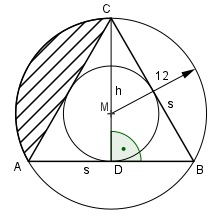

Aufgabe 133 Wie groß ist die schraffierte Fläche A?

Das Dreieck ABC muss gleichseitig sein, weil Inkreis und Umkreis den selben Mittelpunkt haben. 2 r = --- * h | *3 3 3 * r = 2 * h | :2 3 h = --- * 12 mm = 18 mm 2 Satz von Pythagoras im Dreieck DBC s s s2 = (---)2 + h2 | -(---)2 2 2 s2 s2 - ---- = h2 4 3 --- * s2 = h2 |*4 4 3 * s2 = 4 * h2 |:3 4 s2 = --- * 182 3 s2 = 432 |√ s = 20,8 mm AKreis = r2 * π = 122 mm2 * π = 452,2 mm2 ADreieck = s * h 20,8 mm * 18 mm = ------- = ------------------- = 187,2 mm2 2 2 AKreis - ADreieck ASegment = -------------------- = 3 452,2 mm2 - 187 mm2 = ---------------------- = 88,4 mm2 3